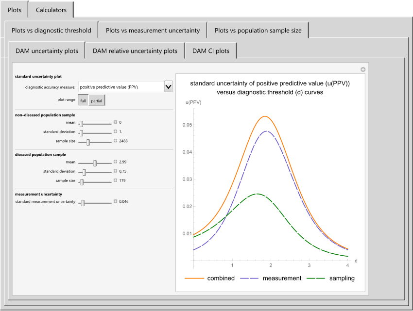

HCSL Publications
Diagnostic Accuracy and Measurement Uncertainty
1. Chatzimichail T. Diagnostic Uncertainty: A Software Tool for Calculating the Uncertainty of Diagnostic Accuracy Measures. Poster presented at: 14th International Diagnostic Error in Medicine Conference; Society to Improve Diagnosis in Medicine; October 25-27, 2021; Evanston, Illinois.
Abstract
Purpose/Problem: Screening and diagnostic tests are applied for the classification of people into diseased and non-diseased populations. Although diagnostic accuracy measures are used to evaluate the correctness of classification in clinical research and practice, there has been limited research on their uncertainty.
Description of Program: For this reason, the freely available interactive program Diagnostic Uncertainty was developed for calculating the uncertainty of diagnostic accuracy measures of diagnostic or screening tests, measuring a normally distributed measurand, applied at a single point in time in samples of non-diseased and diseased populations.
Outcomes: The program calculates and plots the standard combined, measurement and sampling uncertainty and the resultant confidence intervals of various diagnostic accuracy measures of screening or diagnostic tests, for differing sample sizes, mean and standard deviation of the measurand, diagnostic threshold and standard measurement uncertainty of the test.
Discussion: This program calculates the standard and expanded combined, measurement and sampling uncertainty and the resultant confidence intervals of diagnostic accuracy measures of diagnostic tests, applied to samples of populations, providing 99 different types of plots and three different types of comprehensive tables, many of which are novel. To the best of our knowledge, no software, including all major general or medical statistical and uncertainty related software packages provides this range of plots and tables without advanced programming.
Significance of Findings: The program Diagnostic Uncertainty can be used as a flexible, user-friendly, interactive educational or research tool in medical decision-making, to calculate the uncertainty of diagnostic accuracy measures.
2. Chatzimichail T. Relation: A Software Tool for Exploring the Relation between Diagnostic Accuracy and Measurement Uncertainty Poster presented at: 14th International Diagnostic Error in Medicine Conference; Society to Improve Diagnosis in Medicine; October 25-27, 2021; Evanston, Illinois.
Abstract
Purpose/Problem: Although diagnostic accuracy is fundamental to clinical decision making and measurement uncertainty is critical to quality and risk management in laboratory medicine, there has been very limited research on their relation.
Description of Program: For this reason, the freely available interactive program Relation was developed for calculating, optimizing, plotting and comparing various diagnostic accuracy measures and the corresponding risk of diagnostic or screening tests measuring a normally distributed measurand, applied at a single point in time in non-diseased and diseased populations.
Outcomes: The program demonstrates the relation between the diagnostic accuracy measures and the measurement uncertainty for a screening or diagnostic test measuring a single measurand, for differing prevalence of the disease, mean and standard deviation of the measurand, diagnostic threshold, standard measurement uncertainty of the tests and expected loss. Furthermore, it provides calculators for the calculation of the effects of measurement uncertainty on the diagnostic accuracy measures and corresponding risk and for calculating the diagnostic threshold optimizing objective and loss functions.
Discussion: The program Relation provides 269 different types of plots of diagnostic accuracy measures, many of which are novel. To the best of our knowledge, this is the only program to provide this range of plots without advanced statistical programming.
Significance of Findings: The program Relation is user-friendly and can be used as an educational and research tool in medical decision-making, to explore the relation between measurement uncertainty and diagnostic accuracy.
Comment
Best Education Poster, 14th International Diagnostic Error in Medicine Conference, Society to Improve Diagnosis in Medicine, Evanston, Illinois, October 25-27, 2021.
3. Chatzimichail T, Hatjimihail AT. A Software Tool for Calculating the Uncertainty of Diagnostic Accuracy Measures. Diagnostics 2021;11(3):406.
DOI: 10.3390/diagnostics11030406 PMID: 33673466 PMCID: PMC7997227
Abstract
Screening and diagnostic tests are applied for the classification of people into diseased and non-diseased populations. Although diagnostic accuracy measures are used to evaluate the correctness of a classification in clinical research and practice, there has been limited research on their uncertainty. The objective for this work was to develop a tool for calculating the uncertainty of diagnostic accuracy measures, as diagnostic accuracy is fundamental to clinical decision-making. For this reason, the freely available interactive program Diagnostic Uncertainty has been developed in the Wolfram Language. The program provides six modules with nine submodules for calculating and plotting the standard combined, measurement and sampling uncertainty and the resultant confidence intervals of various diagnostic accuracy measures of screening or diagnostic tests, which measure a normally distributed measurand, applied at a single point in time to samples of non-diseased and diseased populations. This is done for differing sample sizes, mean and standard deviation of the measurand, diagnostic threshold and standard measurement uncertainty of the test. The application of the program is demonstrated with an illustrative example of glucose measurements in samples of diabetic and non-diabetic populations, that shows the calculation of the uncertainty of diagnostic accuracy measures. The presented interactive program is user-friendly and can be used as a flexible educational and research tool in medical decision-making, to calculate and explore the uncertainty of diagnostic accuracy measures.
Comment
To the best of our knowledge, this is the first application of uncertainty propagation to estimate the uncertainty of diagnostic accuracy measures.
Snapshot

4.Chatzimichail T, Hatjimihail AT. A Software Tool for Exploring the Relation between Diagnostic Accuracy and Measurement Uncertainty. Diagnostics 2020;10(9):610.
DOI: 10.3390/diagnostics10090610 PMID: 32825135 PMCID: PMC7555914
Abstract
Screening and diagnostic tests are used to classify people with and without a disease. Diagnostic accuracy measures are used to evaluate the correctness of a classification in clinical research and practice. Although this depends on the uncertainty of measurement, there has been limited research on their relation. The objective for this work is to develop an exploratory tool for the relation between diagnostic accuracy measures and measurement uncertainty, as diagnostic accuracy is fundamental to clinical decision making, while measurement uncertainty is critical to quality and risk management in laboratory medicine. For this reason, a freely available interactive program was developed for calculating, optimizing, plotting and comparing various diagnostic accuracy measures and the corresponding risk of diagnostic or screening tests measuring a normally distributed measurand, applied at a single point in time in non-diseased and diseased populations. This is done for differing prevalence of the disease, mean and standard deviation of the measurand, diagnostic threshold, standard measurement uncertainty of the tests and expected loss. The application of the program is illustrated with a case study of glucose measurements in diabetic and non-diabetic populations, that demonstrates the relation between diagnostic accuracy measures and measurement uncertainty.The application of the program is illustrated with a case study of glucose measurements in diabetic and non-diabetic populations. The program is user-friendly and can be used as an educational and research tool in medical decision-making.
Comment
The Task Group: Analytical Performance Specifications based on Outcomes of the European Federation of Clinical Chemistry and Laboratory Medicine has proposed the above program as a tool 'that could help us inform our clinicians, guideline developers and the IVD industry about the impact of analytical performance on test accuracy and clinical decisions' (Horvath AR, Bell KJL, Ceriotti F, Jones GRD, Loh TP, Lord S, Sandberg S, et al. Outcome-based Analytical Performance Specifications: Current Status and Future Challenges. Clin Chem Lab Med. 2024;62(8):1485-1493. https://doi.org/10.1515/cclm-2024-0125).
Snapshot

5. Hatjimihail AT. Quality of diagnostic accuracy studies: the development, use, and evaluation of QUADAS. BMJ Evidence-Based Medicine. 2006;11:189.
Full Text in BMJ Evidence Based Medicine
Terms of Use
The material made freely available by Hellenic Complex Systems Laboratory is subject to its Terms of Use.